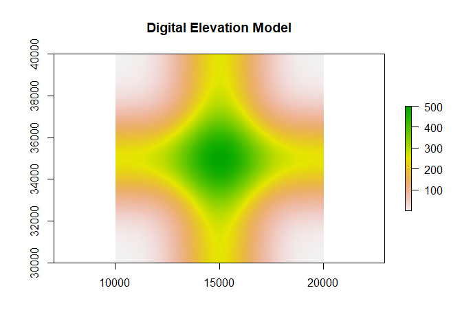
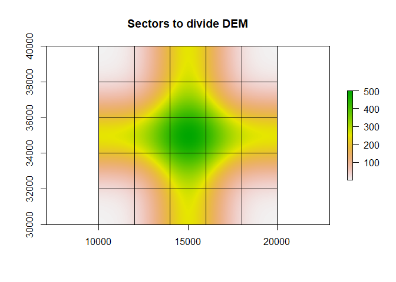
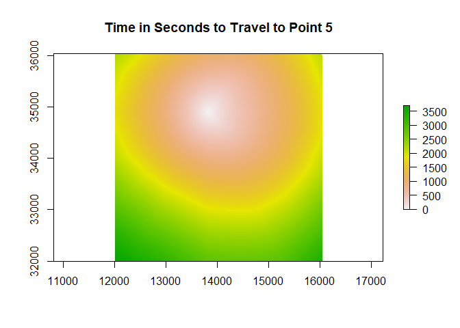
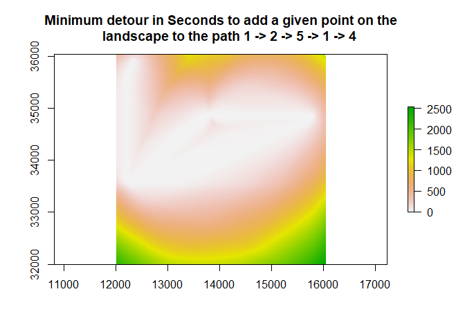
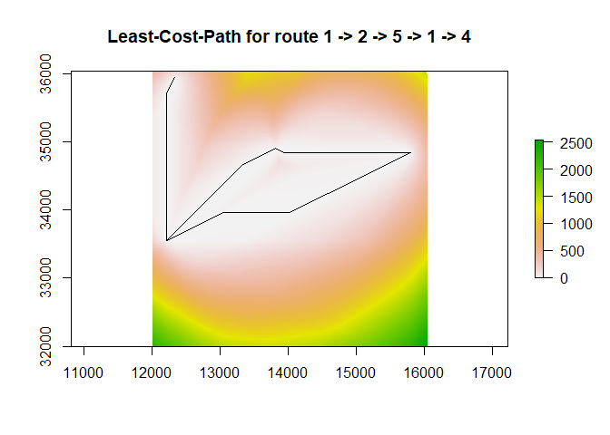
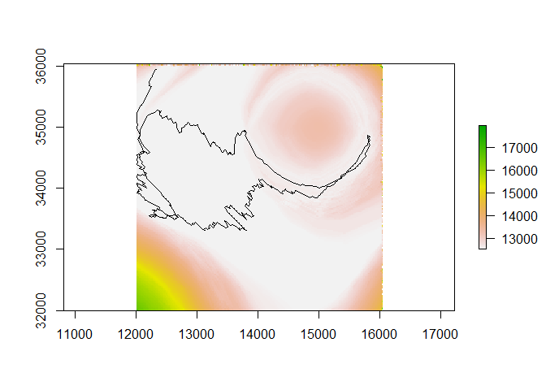

lbmech is a geospatial package for least-cost path analysis in R. It contains additional tools to calculate time- and energy-based costs-of-travel for humans and animals moving across the landscape. The general philosophy behind this package is that least-cost path analyses should always be simple, the most time-taking parts should be done at most once, and ideally that costs should be rooted in empirical reality.
In general terms, both lbmech and the deterministic functions of the library gdistance provide similar capabilities but with notable differences in computation and ease-of-use.gdistance stores movement costs as their reciprocal (conductance , i.e. ) in a sparse matrix representing every possible transition between two cells on a raster. The use of conductance allows for most cell-to-cell transitions to be zero, since impossible transitions due to distance have a conductance of . However, the use of conductance makes it cumbersome to employ functions where f(0) != 0, requiring the use of index masking. This in turn encounters integer overflow errors with ‘large’ datasets that are nonetheless of a necessary size for most reasonable purposes.
lbmech stores data and performs all linear algebra directly on resistance values using the data.table package. Not only is this more intuitive, but it greatly simplifies the syntax necesary for many types of algebraically simple operations. lbmech storrd each possible movement as its own unique row, with entries for a from node, a to node, and either the difference in or raw final and initial values of the raster encountered during the transition. Nodes are named after the coordinates of the raster cell to which they correspond, and are stored as character strings in the form 'x,y'. This allows for (1) in-place modification of objects, greatly increasing processing speed; (2) bidirectional raster analysis describing accumulated costs to and from a node, and (3) additive, nonlinear, and multivariate transformations of large rasters and independent considerations without running into integer overflow limits. Since lbmech in the end is just a wrapper for applying data.table and igraph functions to rasters, it’s easy to generate any arbitrary cost function using data.table syntax.
To ensure that the most computationally intensive steps only need to be performed once for many repeated analyses, lbmech also modularizes important aspects of the cost-distance workflow. This allows for ootherwise prohibitively-large spatial regions and fine spatial resolutions to be considered. This is arguably necessary when land-based transport requires decision-making to be made at scales on the order of 1-10 m. Files by default are stored in the temporary directory, however if it’s expected that the particular procedure will be repeated again after R is reinitialized it is highly recommended to designate a consistent workspace directory in the dir parameter of most functions for each time makeWorld (or a function that depends on it) is called with new parameters. This ensures that each world only needs to be generated once.
Finally, to encourage the use of least-cost analysis rooted in empirical reality, lbmech’s default workflow is geared towards the study of time- and energy- based considerations when moving across a landscape (although the use of any cost function is possible as well). Unlike similar tools such as enerscape for R in this regard, lbmech allows for the estimation of various types of energetic losses (due to kinematic locomotion, work against gravity, basal metabolic processes) instead of simply the total energetic or metabolic expenditure. Moreover, through the getVelocity function it provides a way of deriving cost functions from GPS data of human and animal movement. This is significantly less invasive than the VO2 meters required for direct estimation of net energetic expenditure.
The workflow demonstrated in this README provides a detailed guide for a hypothetical analysis of least-cost energetic analysis employing the examples included in the individual function documentation and generating all data from scratch. For most purposes, only five or six function calls to the package are necessary. A ‘quick start’ guide summarizing the README example in as few function calls as possible is provided at the end of this file. Please note that all units are in SI: Kilograms for mass, meters for length, Joules for energy, seconds for time.
Installation
You can install the development version from GitHub with:
# install.packages("devtools")
devtools::install_github("andresgmejiar/lbmech")Example Workflow
Part 1: Topographic Data Sources
The first step in a typical lbmech workflow is defining the digital elevation model (DEM) to define as the topographic data source. This may be provided in one of two ways:
- A RasterLayer object representing the digital elevation model for the region-of-interest
- In order to ensure that there is a stable file path to the source DEM throughout the workflow, the raster must have been ‘read in’ using the
rasterfunction without having been further modified. If additional modifications are necessary, use thewriteRasterfunction to save it to the disk first before re-reading it in usingraster. For example:
- In order to ensure that there is a stable file path to the source DEM throughout the workflow, the raster must have been ‘read in’ using the
# Generate a DEM
n <- 5
dem <- expand.grid(list(x = 1:(n * 100),
y = 1:(n * 100))) / 100
dem <- as.data.table(dem)
dem[, z := 250 * exp(-(x - n/2)^2) +
250 * exp(-(y - n/2)^2)]
dem <- rasterFromXYZ(dem)
extent(dem) <- c(10000, 20000, 30000, 40000)
crs(dem) <- "+proj=lcc +lat_1=48 +lat_2=33 +lon_0=-100 +datum=WGS84"
# Export it so it doesn't just exist on the memory
dir <- tempdir()
writeRaster(dem, paste0(dir,"/DEM.tif"),format="GTiff",overwrite=TRUE)
# Import raster
dem <- raster(paste0(dir,"/DEM.tif"))
plot(dem, main = "Digital Elevation Model")
- A SpatialPolygonsDataFrame object whose individual polygons represent sectors with unique DEM sources stored as a file path or URL in the data frame object. You can often find these from state agencies.
- As of the most recent version,
lbmechsupports file types readible byrgdalandraster, as well as such files compressed ingzandzipfiles–although the latter is likely to fail in Unix systems.
- As of the most recent version,
Even if you have already downloaded or imported a raster to use as a topographic data source as in case one above, most of the functions will expect a SpatialPolygonsDataFrame object in the form of case two. You can make this using the makeGrid function:
grid <- makeGrid(dem = dem, nx = n, ny = n)
plot(dem, main = "Sectors to divide DEM")
plot(grid,add=TRUE)
lbmech is specifically designed to deal with large regions that would be prohibitive to analyze if the data is stored exclusively within the memory. To deal with this issue, lbmech will crop any input raster into an nx by ny grid and save the sector in its own gz file for case 1. In both cases—to save memory and computational time—sectors are only cropped or downloaded on an as-needed basis. You can use the whichTiles and getMap functions to identify which tile(s) might be needed, and download or crop any such tiles that haven’t been prepared:
# Generate five random points that fall within the grid
points <- data.table(x = runif(5, extent(dem)[1], extent(dem)[2]),
y = runif(5, extent(dem)[3], extent(dem)[4]))
# Run whichTiles and getMap to prepare appropriate sector files
tile_list <- whichTiles(region = points, polys = grid)
#> Loading required namespace: rgeos
print(tile_list)
#> [1] "SECTOR_24" "SECTOR_9" "SECTOR_25" "SECTOR_18" "SECTOR_20"
getMap(tiles = tile_list, polys = grid, dir = dir)
#> [1] "Cropping Tile SECTOR_24 (1 of 5)"
#> [1] "Cropping Tile SECTOR_9 (2 of 5)"
#> [1] "Cropping Tile SECTOR_25 (3 of 5)"
#> [1] "Cropping Tile SECTOR_18 (4 of 5)"
#> [1] "Cropping Tile SECTOR_20 (5 of 5)"
print(list.files(dir,recursive=TRUE, pattern = ".gz$"))
#> [1] "Elevations/SECTOR_18.gz" "Elevations/SECTOR_20.gz" "Elevations/SECTOR_24.gz" "Elevations/SECTOR_25.gz"
#> [5] "Elevations/SECTOR_9.gz"By far the most computationally intensive part of the workflow is the first transformation of the topographic data. To calculate the distances, we will need to convert the data from a a matrix of locations (a raster) with an associated attribute (elevation) to a list of possible movements between locations (all raster cells and their neighbors) and associated attribute (difference in elevation). These are stored as gz files in a folder named 'Tensors' in the workspace directory and will be later read into the memory as required to avoid having to re-calculate them every time they are needed:
# Select all tiles that exist between x = (12000,16000) and y = (32000,36000)
tiles <- extent(c(12000,16000,32000,36000))
tiles <- as(tiles,"SpatialPolygons")
crs(tiles) <- crs(grid)
tiles <- whichTiles(region = tiles, polys = grid)
makeWorld(tiles = tiles, polys = grid, cut_slope = 0.5, z_fix = dem, dir = dir)
#> [1] "Cropping Tile SECTOR_1 (1 of 9)"
#> [1] "Cropping Tile SECTOR_2 (2 of 9)"
#> [1] "Cropping Tile SECTOR_3 (3 of 9)"
#> [1] "Cropping Tile SECTOR_6 (4 of 9)"
#> [1] "Cropping Tile SECTOR_7 (5 of 9)"
#> [1] "Cropping Tile SECTOR_8 (6 of 9)"
#> [1] "Cropping Tile SECTOR_11 (7 of 9)"
#> [1] "Cropping Tile SECTOR_12 (8 of 9)"
#> [1] "Cropping Tile SECTOR_13 (9 of 9)"
#> [1] "Cropping Tile SECTOR_4 (1 of 2)"
#> [1] "Cropping Tile SECTOR_14 (2 of 2)"
#> [1] "Cropping Tile SECTOR_16 (1 of 2)"
#> [1] "Cropping Tile SECTOR_17 (2 of 2)"
#> [1] "Cropping Tile SECTOR_19 (1 of 1)"makeWorld internally calls getMap so you do not need to prepare the data beforehand. This, however, means that you will need to either erase the created directories or define a new workspace directory and regenerate all tensors from scratch if you later on wish to change any of the parameters used in makeWorld.A note about the parameters. The cut_slope is the magnitude of the dimensionless slope beyond which movement is not possible.
z_fix merits special attention since its consistency will be required for most of the later functions in the workflow.lbmech allows for sector-defining grids pointing to DEM sources in different coordinate reference systems, spatial resolutions, and grid origins. However, the package requires a ‘master’ raster be designated that will define the projection, spatial resolution, and grid origin to be used in the analyses. All data will be projected to these ‘fixed’ parameters. Really only the origin can be neglected from consideration, and generally to minimize space should be left at its default of zero.
The spatial resolution should generally be of an order of magnitude comparable to the scale of decision-making in a real-world environment. For example, a 90 m SRTM raster cell would generally result in paths much straighter than a real individual would walk, while a 0.10 cm would result in paths much curlier than a real individual would walk. Thus, for humans a reasonable resolution might be between 1-10 m, while for ants it might be between 1-5 mm. If no z_fix is specified, the default is a resolution of 5 m. If you wish to change this, you must make sure to include the parameter res = x where x is desired resolution in any function that requires z_fix or proj in the remainder of the workflow.
The raster projection should be selected to minimize distance distortion along different bearings—such as conformal projections. If your source DEM is of the appropriate resolution and projection, you can simply use the original DEM (or a constituent, if it’s multiple sources) as the z_fix parameter throughout. If none of these rasters are appropriate, you can make one using the fix_z function:
z_fix <- fix_z(proj = crs(dem), # Desired projection
res = res(dem), # Desired resolution
dx = 0, # Desired horizontal offset
dy = 0) # Desired vertical offsetIf you do not specify a z_fix parameter, the default is for the functions to assign it as z_fix <- fix_z(proj = proj, res = 5, dx = 0, dy = 0). The functions will generally try to figure out what the projection is, but it’s best practice to define it outside of the function (ensuring it’s confromal and in meters) and continually refer to it. In short, if a function has a z_fix parameter, you must ALWAYS specify either a z_fix OR a crs. If you modify both, z_fix takes precedence, and if you modify either of them or res, dx, or dy when making the world for the first time, you must modify them through the remainder of the workflow CONSISTENTLY.
Contrary to my advice, in this example we will set z_fix = dem since the resolution is low enough to minimize computational time.
Part 2: Velocity Data Sources
The fundamental assumption behind the least-cost calculations is that humans and animals tend to prefer to walk at predictable speeds at a given slope. The maximum speed is generally achieved at one particular slope, and speed would tend to decrease exponentially as the distance to this ideal slope increases. Mathematically, this is described by Tobler’s Hiking function where is horizontal displacement, time, horizontal speed, the maximum walking speed, the change in elevation versus the change in horizontal distance (dimensionless slope, or where is the slope in degrees or radians), the ideal slope of maximum walking speed, and a parameter controling how sensitive changes in speed are to changes in slope. Canonical applications of this function to humans set m/s, , and .
lbmech provides the getVelocity function by which these parameters can be estimated from locational data for different species. GPS data from GPX files can be imported using the importGPX function. Data should be structured such that there is a column with x coordinates, a column with y coordinates, a column with changes in time, and a column with a trajectory id. Note that all values must be in meters (other than 'dt', which must be in seconds), and the 'x' and 'y' coordinates in a projected coordinate system. Alternatively, 'x' and 'y' may represent the longitude and latitude, respectively, in decimal degrees so long as degs = TRUE. If columns are named anything other than 'x', 'y', 'dt', and 'id', the column names need to be declared explicitly. Elevational data is provided as the z parameter. This can be either a column with elevations—such as those recorded by a GPS unit—a RasterLayer representing the DEM for that region, or a SpatialPolygonsDataFrame like the output of the makeGrid function:
# Generate dummy GPS data
# 10,000 observations falling within the extent of the generted DEM
# taken at an interval of 120 seconds between observations
# and of 10 different individuals (1000 per individual)
data <- data.table(x = runif(10000,extent(dem)[1],extent(dem)[2]),
y = runif(10000,extent(dem)[3],extent(dem)[4]),
dt = 120,
ID = rep(1:10,each=1000))
velocity <- getVelocity(data = data, z = grid, dir = dir)
#> [1] "Cropping Tile SECTOR_23 (1 of 6)"
#> [1] "Cropping Tile SECTOR_21 (2 of 6)"
#> [1] "Cropping Tile SECTOR_10 (3 of 6)"
#> [1] "Cropping Tile SECTOR_22 (4 of 6)"
#> [1] "Cropping Tile SECTOR_15 (5 of 6)"
#> [1] "Cropping Tile SECTOR_5 (6 of 6)"So what happened? getVelocity called whichTiles and getMap to identify which tiles were needed to get the elevation for the points we generated in data. It then cropped and saved each tile in a folder named 'Elevations' in the dir. Afterwards, it extracted the elevation for each data point, and performed a nonlinear quantile regression to get the appropriate parameters. Since GPS data can be noisy, getVelocity also allows for slope_lim and v_lim parameters to which dimensionless slope and velocity values are outliers before performing the regression.
The output object is a list. Since this was calculated based on random data, the calculated parameters here are meaningless but let’s have a look at the structure anyways:
print(velocity)#> $model
#> Nonlinear quantile regression
#> model: dl_dt ~ v_max * exp(-k * abs(dz_dl - alpha))
#> data: [ data (dl_dt <= v_lim) & abs(dz_dl) <= slope_lim
#> tau: 0.95
#> deviance: 15513.54
#> k alpha
#> 9.3765158628 -0.0002554502
#>
#> $vmax
#> [1] 94.47548
#>
#> $alpha
#> [1] -0.0002554502
#>
#> $k
#> [1] 9.376516
#>
#> $tau_vmax
#> [1] 0.995
#>
#> $tau_nlrq
#> [1] 0.95
#>
#> $data
#> ID x y z dt dx dy dz dl dl_dt dz_dl
#> 1: 1 12212.41 32529.50 91.27850 120 NA NA NA NA NA NA
#> 2: 1 11505.81 30739.54 14.78457 120 -706.5965 -1789.9575 -76.49393 1924.377 16.036474 -0.039749971
#> 3: 1 15396.60 34388.33 468.68015 120 3890.7912 3648.7907 453.89558 5334.035 44.450292 0.085094225
#> 4: 1 12964.58 32482.58 142.54257 120 -2432.0223 -1905.7497 -326.13757 3089.760 25.747996 -0.105554354
#> 5: 1 10203.78 32573.76 58.64795 120 -2760.8021 91.1736 -83.89463 2762.307 23.019226 -0.030371216
#> ---
#> 9996: 10 11252.46 39152.06 10.87654 120 -7124.0611 832.2890 -19.38931 7172.514 59.770947 -0.002703279
#> 9997: 10 18621.13 31766.48 27.82283 120 7368.6690 -7385.5834 16.94628 10432.839 86.940323 0.001624321
#> 9998: 10 17874.49 32426.01 80.00574 120 -746.6408 659.5376 52.18292 996.224 8.301867 0.052380709
#> 9999: 10 19379.55 33973.62 194.80910 120 1505.0552 1547.6026 114.80335 2158.765 17.989706 0.053180114
#> 10000: 10 15913.79 36145.81 380.90640 120 -3465.7618 2172.1928 186.09731 4090.223 34.085194 0.045498080The velocity list contains seven entries:
$model, containing an object of classnlrqwith the output model from the nonlinear quantile regression (nlrq) structured in the form of Tobler’s function. You can treat this as any other statistical model object such aslm.$vmax, containing the identified maximum velocity, calculated as thetau_maxfraction of all observed velocities.$alpha, containing the identified angle of maximum velocity, and calculated from the nlrq of Tobler’s function$k, containing the identified topographic sensitivity factor, and calculated from the nlrq of Tobler’s function.$tau_max, containing the employedtau_max.$tau_nlrq, containing the employedtau_nlrq.$data, containing a data.table with the original data in a standardized format
Generally, the rate at which you are sampling locations should be comparable to the amount of time you would expect it would take you to travel from one cell to another. In this scenario, we can move up to contiguity = 2 pixels away so we want to move at contiguity + 1 pixels away. We expect to move at up to v_est = 1.5 m/s, and each pixel has a length of \code{res(dem)} = 20, so we should downsample any signal that makes observations faster than t_step = res(dem) / v_est * (contiguity + 1) * sqrt(2) seconds. If our data is taken at a faster rate (for example, many phones record data at an interval of 1-10 seconds), we can use the downsample function before running the getVelocity function:
# Generate fake data with x,y coordinates, z elevation, and a t
# column representing the number of seconds into the observation
data2 <- data.table(x = runif(10000,10000,20000),
y = runif(10000,30000,40000),
z = runif(10000,0,200),
t = 1:1000,
ID = rep(1:10,each=1000))
# Set the minimum value at 3 seconds
data2 <- downsample(data = data2, t_step = 3, z = 'z')
v2 <- getVelocity(data = data2)Finally, we can also investigate the velocity function for various sub-sets of the data. For example, let’s say that each ID represents a unique individual, and we also have another column representing different tracks followed by each individual:
# Generate fake data with x,y coordinates, z elevation, and a t
# column representing the number of seconds into the observation
data2 <- data.table(x = runif(10000,10000,20000),
y = runif(10000,30000,40000),
z = runif(10000,0,200),
dt = 15,
AnimalID = rep(1:10,each=1000),
TrackID = rep(1:100,each=100))
# To get the velocity function for all observations togther
v1 <- getVelocity(data2, ID = 'TrackID')
# This is the same as above, but it only returns a list with the
# coefficients and p-values
v2 <- dtVelocity(data2, ID = 'TrackID')
# Instead this function is best to get the coefficients for
# each individual animal un a data.table using .SD
v3 <- data2[, dtVelocity(.SD, ID = 'TrackID'),
by = 'AnimalID', .SDcols = names(data2)]
head(v3)
#> AnimalID k alpha v_max k_p alpha_p
#> 1: 1 3.50000 -5.000000e-02 737.4180 9.114769e-03 1.730733e-02
#> 2: 2 3.50000 -5.000000e-02 727.9875 2.385765e-02 2.018783e-02
#> 3: 3 3.50000 -5.000000e-02 750.6535 3.684702e-02 5.935256e-02
#> 4: 4 3.50000 -5.000000e-02 739.6417 4.939626e-04 1.669016e-03
#> 5: 5 17.96599 -5.704558e-05 745.5354 0.000000e+00 9.383468e-01
#> 6: 6 3.50000 -5.000000e-02 733.1121 2.134099e-07 5.002490e-07Part 3: Preparing the World
You’ll have noticed that makeWorld simply made the gz files in the working directory for each sector that’s required. To import them into the memory, use the importWorld function. It first runs makeWorld (which in turn calls getMap) to make sure each necessary sector has been prepared, and then imports ONLY the possible movements falling within a given region and excluding those falling within a given banned area:
# Import the data lying between x = (12000,16000) and y = (32000,36000)...
region <- extent(c(12000,16000,32000,36000))
region <- as(region,"SpatialPolygons")
crs(region) <- crs(grid)
world <- importWorld(region = region, polys = grid, banned = NULL,
cut_slope = 0.5, z_fix = dem, dir = dir)Let’s have a look at what the world data.table looks like:
head(world)
#> from to dz
#> 1: 12010,34130 12030,34130 0.8184357
#> 2: 12010,34130 12010,34110 -1.7999878
#> 3: 12010,34130 12030,34110 -0.9815521
#> 4: 12010,34130 12050,34110 -0.1442108
#> 5: 12010,34130 12030,34090 -2.8067932
#> 6: 12030,34130 12010,34130 -0.8184357There are three columns. $from and $to contain the x and y coordinates for the start and stop of each possible movement/transition. These are stored as character strings, with a precision of up to two decimal points depending on the resolution and origin. $dz contains the change in elevation encountered when traveling from the $from cell to the $to cell.
The next step is calculating the cost in terms of time, work, and energy for every possible transition. The calculateCosts function takes the changes in elevation and using the velocity information from the previous section, models of biomechanical work expenditure, and physical limitations calculates the expected costs. There are currently three available models, run ?calculateCosts for more information on each model and what parameters are required. This is for a 60 kg human with a maximum walking speed of 1.5 m/s, a leg length of 80 cm, a stride length of 1.6 m, a BMR of 93 J/s, and canonical values for Tobler’s hiking function:
world <- calculateCosts(world = world, method = 'kuo', m = 60, v_max = 1.5,
BMR = 93, k = 3, alpha = -0.05, l_s = 1.6, L = 0.8)Note that we could simply have done v_max = velocity$vmax, alpha = velocity$alpha, k = velocity$k, but the current velocity object was generated with random data and thus the parameters are nonsensical. Taking a look at the world object now shows an additional nine columns:
head(world)
#> from to dz x_i y_i dl dl_t dt dU_l dK_l dW_l dE_l
#> 1: 12010,34130 12030,34130 0.8184357 12010 34130 20.00000 1.141907 17.51456 481.7312 977.9639 7298.476 8927.330
#> 2: 12010,34130 12010,34110 -1.7999878 12010 34130 20.00000 1.330383 15.03326 0.0000 1327.4394 6637.197 8035.290
#> 3: 12010,34130 12030,34110 -0.9815521 12010 34130 28.28427 1.432720 19.74167 0.0000 2177.2016 10886.008 12721.983
#> 4: 12010,34130 12050,34110 -0.1442108 12010 34130 44.72136 1.303612 34.30572 0.0000 2849.9886 14249.943 17440.375
#> 5: 12010,34130 12030,34090 -2.8067932 12010 34130 44.72136 1.443657 30.97782 0.0000 3495.2198 17476.099 20357.037
#> 6: 12030,34130 12010,34130 -0.8184357 12030 34130 20.00000 1.459699 13.70145 0.0000 1598.0415 7990.208 9264.443$x_i and $y_i give the numeric x and y coordinates of the first part of the movement/transition. $dl gives the distance, $dl_t the predicted speed, $dt the predicted amount of time spent making that movement, $dU_l the work performed against gravity, $dK_l the kinematic work performed, $dW_l the net mechanical work performed, and $dE_l the total energetic/metabolic expenditure.
Part 4: Getting Costs, Paths, and Corridors
The final part of the workflow involves calculating the minimum cost and/or least-cost path between two sets of points. Generally the first step in this process is running the getCosts function, with the parameters set based on your needs:
- If you simply desire the distance between two sets of points (cases 1 and 2), provide entries for
fromandto(or justfromif the interest is in all distances between locations in that object). Output is a distance matrix. The computational time for this operation is comparable to generating a raster for the distance to all cells in the world (unless all of the locations in the object are close to each other). So unless the operation is to be done multiple times, it is highly recommended to generate the raster as below and extract values:
# Generate five random points that fall within the region
points <- data.table(ID = 1:5,
x = runif(5, extent(region)[1], extent(region)[2]),
y = runif(5, extent(region)[3], extent(region)[4]))
# Get the cost for travel between all combination of points
costMatrix <- getCosts(world = world, from = points, z_fix = dem,
costs ='all', direction = 'out', dir = dir)The output will be a list of cost matrices, with elements named after the type of costand direction of travel:
print(costMatrix)
#> $time_out
#> To_ID
#> From_ID 1 2 3 4 5
#> 1 0.000 3785.938 2568.529 2076.004 2310.362
#> 2 3050.684 0.000 1570.530 2929.603 1580.320
#> 3 1961.597 2038.679 0.000 3089.954 2039.565
#> 4 1945.193 3520.094 3380.561 0.000 1921.295
#> 5 1711.558 1684.172 1659.327 1423.330 0.000
#>
#> $work_out
#> To_ID
#> From_ID 1 2 3 4 5
#> 1 0.0 1692662.5 1083922.5 942510.9 1044711.7
#> 2 1202161.7 0.0 750423.6 1223106.8 721523.5
#> 3 927981.8 871342.2 0.0 1347879.8 865893.2
#> 4 861407.5 1592498.3 1456959.0 0.0 856901.6
#> 5 611075.4 774201.1 806600.5 569726.0 0.0
#>
#> $energy_out
#> To_ID
#> From_ID 1 2 3 4 5
#> 1 0.0 2052520.1 1322795.7 1139740.5 1259575.3
#> 2 1501162.6 0.0 908436.4 1502262.5 869120.5
#> 3 1131515.0 1060939.3 0.0 1651101.7 1058009.8
#> 4 1046297.7 1923020.9 1776951.6 0.0 1035582.0
#> 5 770250.3 930829.0 976948.6 702095.7 0.0If you wish to generate a RasterStack of costs from and/or to all nodes in the from object, set the
output = 'object'anddestination = 'all'.You may also save the rasters as a series of
tiffiles in the same workspace directory as the transitiongztensor files and the cropped/downloaded DEMs. This allows us to usegetCostswithin a loop for large numbers of origin nodes without running into random access memory limitations. Do this by settingoutput = 'file'anddestination = 'all'.You may perform (2) and (3) simultaneously by setting
output = c('file','object')anddestination = 'all'.
# Calculate the cost rasters to travel to and from a set of points
costRasters <- getCosts(world = world, from = points, z_fix = dem,
destination = 'all', costs = 'all',
output = c("object","file"), dir = dir)Let’s take a look at the structure of the costRasters:
structure(costRasters)
#> $time_in
#> class : RasterStack
#> dimensions : 202, 202, 40804, 5 (nrow, ncol, ncell, nlayers)
#> resolution : 20, 20 (x, y)
#> extent : 12000, 16040, 32000, 36040 (xmin, xmax, ymin, ymax)
#> crs : +proj=lcc +lat_0=0 +lon_0=-100 +lat_1=48 +lat_2=33 +x_0=0 +y_0=0 +datum=WGS84 +units=m +no_defs
#> names : To_1, To_4, To_5, To_3, To_2
#> min values : 0, 0, 0, 0, 0
#> max values : 3826.432, 4506.113, 3700.125, 3638.810, 4838.098
#>
#>
#> $time_out
#> class : RasterStack
#> dimensions : 202, 202, 40804, 5 (nrow, ncol, ncell, nlayers)
#> resolution : 20, 20 (x, y)
#> extent : 12000, 16040, 32000, 36040 (xmin, xmax, ymin, ymax)
#> crs : +proj=lcc +lat_0=0 +lon_0=-100 +lat_1=48 +lat_2=33 +x_0=0 +y_0=0 +datum=WGS84 +units=m +no_defs
#> names : From_1, From_4, From_5, From_3, From_2
#> min values : 0, 0, 0, 0, 0
#> max values : 4336.080, 4417.912, 2741.120, 3259.288, 3728.537
#>
#>
#> $work_in
#> class : RasterStack
#> dimensions : 202, 202, 40804, 5 (nrow, ncol, ncell, nlayers)
#> resolution : 20, 20 (x, y)
#> extent : 12000, 16040, 32000, 36040 (xmin, xmax, ymin, ymax)
#> crs : +proj=lcc +lat_0=0 +lon_0=-100 +lat_1=48 +lat_2=33 +x_0=0 +y_0=0 +datum=WGS84 +units=m +no_defs
#> names : To_1, To_4, To_5, To_3, To_2
#> min values : 0, 0, 0, 0, 0
#> max values : 1563957, 1958144, 1664177, 1550179, 2150581
#>
#>
#> $work_out
#> class : RasterStack
#> dimensions : 202, 202, 40804, 5 (nrow, ncol, ncell, nlayers)
#> resolution : 20, 20 (x, y)
#> extent : 12000, 16040, 32000, 36040 (xmin, xmax, ymin, ymax)
#> crs : +proj=lcc +lat_0=0 +lon_0=-100 +lat_1=48 +lat_2=33 +x_0=0 +y_0=0 +datum=WGS84 +units=m +no_defs
#> names : From_1, From_4, From_5, From_3, From_2
#> min values : 0, 0, 0, 0, 0
#> max values : 1916192, 1948730, 1219162, 1446797, 1460012
#>
#>
#> $energy_in
#> class : RasterStack
#> dimensions : 202, 202, 40804, 5 (nrow, ncol, ncell, nlayers)
#> resolution : 20, 20 (x, y)
#> extent : 12000, 16040, 32000, 36040 (xmin, xmax, ymin, ymax)
#> crs : +proj=lcc +lat_0=0 +lon_0=-100 +lat_1=48 +lat_2=33 +x_0=0 +y_0=0 +datum=WGS84 +units=m +no_defs
#> names : To_1, To_4, To_5, To_3, To_2
#> min values : 0, 0, 0, 0, 0
#> max values : 1928774, 2388734, 2008291, 1894229, 2602716
#>
#>
#> $energy_out
#> class : RasterStack
#> dimensions : 202, 202, 40804, 5 (nrow, ncol, ncell, nlayers)
#> resolution : 20, 20 (x, y)
#> extent : 12000, 16040, 32000, 36040 (xmin, xmax, ymin, ymax)
#> crs : +proj=lcc +lat_0=0 +lon_0=-100 +lat_1=48 +lat_2=33 +x_0=0 +y_0=0 +datum=WGS84 +units=m +no_defs
#> names : From_1, From_4, From_5, From_3, From_2
#> min values : 0, 0, 0, 0, 0
#> max values : 2326474, 2370636, 1489674, 1760632, 1821267It’s a list of RasterStacks, each in a slot named after the type of cost (time, work, or energy) and the direction of travel (out from a node, or in to a node). Each RasterStack has one layer for each node, with the value at each point in the RasterLayer representing the absolute minimum cost necessary to travel between that given node to/from that given point.
plot(costRasters$time_in[['To_5']],main='Time in Seconds to Travel to Point 5') Since 'file' was also listed in the output parameter for getCosts, the raster files were also exported to a 'CostRasters' folder in dir.
print(list.files(normalizePath(paste0(dir,"/CostRasters"))))
#> [1] "Energy_From_1.tif" "Energy_From_2.tif" "Energy_From_3.tif" "Energy_From_4.tif" "Energy_From_5.tif"
#> [6] "Energy_To_1.tif" "Energy_To_2.tif" "Energy_To_3.tif" "Energy_To_4.tif" "Energy_To_5.tif"
#> [11] "Time_From_1.tif" "Time_From_2.tif" "Time_From_3.tif" "Time_From_4.tif" "Time_From_5.tif"
#> [16] "Time_To_1.tif" "Time_To_2.tif" "Time_To_3.tif" "Time_To_4.tif" "Time_To_5.tif"
#> [21] "Work_From_1.tif" "Work_From_2.tif" "Work_From_3.tif" "Work_From_4.tif" "Work_From_5.tif"
#> [26] "Work_To_1.tif" "Work_To_2.tif" "Work_To_3.tif" "Work_To_4.tif" "Work_To_5.tif"These rasters—be they stored as an object on the memory with 'object' %in% output or on the hard drive with 'file' %in% output' are required to compute cost corridors. For a given series of origins and destinations (e.g. A -> B -> C) a cost raster gives the absolute minimum expectedtotal cost that would be required to route the path through any given point on the landscape. The cells with the lowest value correspond to the least-cost path, while the value of all other cells minus the lowest value represents the cost to perform a SINGLE detour to any given location from the least-cost path. These rasters can be generated with the makeCorridor function:
# Calculating the corridors from a list of RasterStacks,
# with path 1 -> 2 -> 4 -> 1 -> 5
pathOrder <- c(1,2,5,1,4)
corridors <- makeCorridor(rasters = dir, order = pathOrder)
plot(corridors$time - minValue(corridors$time),
main = 'Minimum detour in Seconds to add a given point on the
landscape to the path 1 -> 2 -> 5 -> 1 -> 4')
We could also have used the parameter rasters = costRasters since makeCorridor accepts the object output of getCosts as its input. Note that the names of the nodes listed in order must correspond to the names of the nodes used in the from column of the getCosts function. Due to carried floats it is insufficient to simply select all values corresponding to the minimum cost to identify the least-cost path. Fortunately, the getPaths function can generate a list of SpatialLinesDataFrame objects corresponding to the least-cost paths:
paths <- getPaths(world = world, nodes = points, z_fix = dem, order = pathOrder)
# re-plot the corridors
plot(corridors$time - minValue(corridors$time),
main = 'Least-Cost-Path for route 1 -> 2 -> 5 -> 1 -> 4')
plot(paths$time, add=TRUE)
Quick Start
For Energetic and Temporal Cost Calculations
Assuming that we have (1) generated a dem, (2) location points, (3) high-resolution locational data representing the XY location of an animal, and (4) a region of interest lying within the dem’s extent, the minimum required workflow to get the velocity function, cost rasters for a set of location points, a corridor between some or all of them, and the least cost path is:
# Start by making the grid:
n <- 5
grid <- makeGrid(dem = dem, nx = n, ny = n)
# Or you can employ a grid from an alternate source pointing to
# filepaths or URLs from which to download data
# Get the velocity function
velocity <- getVelocity(data = data, z = grid, dir = dir)
# Calculate the transitional costs to move between each allowable cells.
# Replace the v_max, alpha, and k parameters with known values if appropriate,
# and make sure all other parameters are representative for your species of interest
world <- calculateCosts(world = grid, m = 60, v_max = velocity$vmax,
k = velocity$k, alpha = velocity$alpha, BMR = 93,
l_s = 1.6, L = 0.8, region = region, z_fix = dem,
cut_slope = 0.5, dir = dir)
# Get the total costs for the least-cost path between any point on the landscape
# and all of the nodes; export as rasters but don't keep the object
getCosts(world = world, from = points, z_fix = dem, destination = 'all',
output = 'file', dir = dir)
# Calculate the corridors for the path between nodes 1 -> 2 -> 5 -> 1 -> 4
pathOrder <- c(1,2,5,1,4)
corridors <- makeCorridor(rasters = dir, order = pathOrder)
# Get that same least-cost path
paths <- getPaths(world = world, nodes = points, z_fix = dem, order = pathOrder)Custom Cost Functions and Multivariate Costs
It’s also possible to employ costs that aren’t directly a function of the difference in elevation between two points. This could be because the employed raster does not represent heights (such as a landcover raster), or because the required values are the raw ones (not just the difference). Neither case prohibits use of the workflow in Part 1. In such situations, it’s important to bear in mind that $dz represents that difference in value. When the raw values are needed, the keep_z parameter in makeWorld should be a character vector including c('z_i','z_f'), and also dz when the difference between them is needed. If the raster is categorical (such as those representing discrete landcover types), dz should be omitted. In the event of a tie in mosaicing rasters, we’ll select the highest integer value (FUN = max). Don’t forget to set sampling = 'ngb' if the data is categorical and thus it’s inappropriate to employ the default 'bilinear' interpolation. If the origin x or y coordinates are needed, the xy1 parameter in importWorld should be set to TRUE, and likewise for the destination coordinates and xy2 parameter. If the distance between the origin and destination are needed, dl = TRUE:
# Generate a categorical DEM
n <- 5
dem2 <- expand.grid(list(x = 1:(n * 100),
y = 1:(n * 100))) / 100
dem2 <- as.data.table(dem2)
dem2[, z := sample(1:4,size=nrow(dem2),replace=TRUE)]
dem2 <- rasterFromXYZ(dem2)
extent(dem2) <- c(10000, 20000, 30000, 40000)
crs(dem2) <- "+proj=lcc +lat_1=48 +lat_2=33 +lon_0=-100 +datum=WGS84"
# Export it so it doesn't just exist on the memory
dir2 <- normalizePath(paste0(tempdir(),"/Categorical"),mustWork=FALSE)
dir.create(dir2,showWarnings=FALSE)
writeRaster(dem2, paste0(dir2,"/DEM2.tif"),format="GTiff",overwrite=TRUE)
# Import raster, get the grid
dem2 <- raster(paste0(dir2,"/DEM2.tif"))
grid2 <- makeGrid(dem = dem2, nx = n, ny = n)
world2 <- importWorld(region = region, polys = grid2, cut_slope = Inf,
z_fix = dem, keep_z = c("z_i","z_f"), dl = TRUE,
FUN = max, sampling = 'ngb', dir = dir2)Let’s take a look at the structure of this new world data.table
head(world2)
#> from to z_i z_f dl
#> 1: 12010,34130 12030,34130 3 4 20.00000
#> 2: 12010,34130 12010,34110 3 2 20.00000
#> 3: 12010,34130 12030,34110 3 3 28.28427
#> 4: 12010,34130 12050,34110 3 3 44.72136
#> 5: 12010,34130 12030,34090 3 2 44.72136
#> 6: 12030,34130 12010,34130 4 3 20.00000Unlike the output of importWorld above, this contains five columns, only sharing in common the $from and $to columns.Let’s pretend that this raster represents landtypes, and for some reason travel between cells of the same landcover type are prohibited. Bearing in mind that since distance = 16 a traveler could ‘hop’ over a single barrier cell, we can still apply that condition using a simple data.table expression:
world2 <- world2[z_i != z_f, ]This drops all entries where z_i == z_f. Now let’s calculate some imaginary costs. Let’s say that the cost to travel from one landcover type to another is square of the origin landcover class integer times the destination class integer divided by the distance between the cells dl:
world2[, fakeCost := z_i^2 * z_f / dl]Since we’ve used the same z_fix and precision values, any overlapping sections will have the same cell names as the example in Part 3. Thus, we can calculate different types of costs based on different types of landscape variables. For example, if the total cost function we’re interested is the product of $fakeCost from above and the gravitational potential energy $dU_l from part 3 we just need to merge the world data.tables, calculate the total cost, and run getCosts, makeCorridor, and getPaths as above but specifying the new cost name.
# Merge the worlds
world3 <- merge(world[,.(from,to,dU_l)], # Keep cell names
world2[,.(from,to,fakeCost)], # and costs, join
by=c("from","to"), all=FALSE) # on the latter two
# Calculate our multivariate cost
world3[, newCost := fakeCost * dU_l]
# Get the total costs for the least-cost path between any point on the landscape
# and all of the nodes; export as rasters but don't keep the object
getCosts(world = world3, from = points, z_fix = dem, destination = 'all',
output = 'file', costs='newCost', dir = dir2)
# Calculate the corridors for the path between nodes 1 -> 2 -> 5 -> 1 -> 4
pathOrder <- c(1,2,5,1,4)
corridors <- makeCorridor(rasters = dir2, order = pathOrder, cost='newCost')
# Get that same least-cost path
paths <- getPaths(world = world3, nodes = points, z_fix = dem,
order = pathOrder, cost='newCost')
plot(corridors)
plot(paths,add=TRUE)